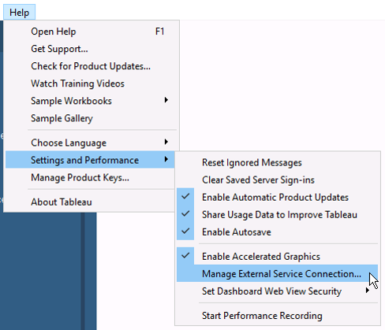
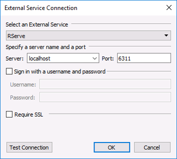
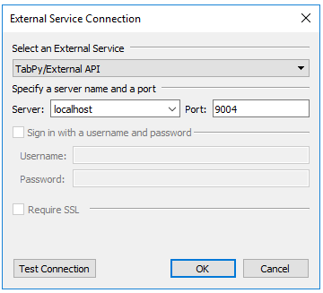

8 Data Visualization
8.1 Tableau
Introduction
Tableau is a data visualization software. It’s a very popular tool for data and business analysts because it’s easy to learn and doesn’t require the developer of the tool programming background. It has powerful capabilities for creating dashboards and story boards which can be used for exploratory analysis or to lead end users through a particular story in the data.
Pros and Cons
Anyone who has created a dashboard before knows that it takes a long time, even a simple one using software like Rshiny. A complex one using Javascript’s visualization library, D3, takes even longer. The other issue with creating a custom dashboard in a software like R or JavaScript, is that the dashboard has to be maintained by a programmer who knows the language(s) used to build the dashboard.
So, there are a lot of reasons to use Tableau. However, as a risk-averse programmer there are several things I would NEVER use Tableau for, even though Tableau has the capability to do so. The most important one is data management. A lot of the examples and use cases of Tableau use very clean, ready-to-use data, or the data needs to have one or two very simple changes, such as splitting the column of changing the column type.
In my world, the data are never clean like that. They almost always have to be a) validated and b) managed. Although, there are some capabilities that allow a user to clean data in Tableau, I would strongly advise against that. There isn’t an easy way to track changes made to the data. As programmers, we use version control to track all our changes and then submit pull requests to have those changes approved. I would recommend maintaining this workflow for quality assurance purposes.
Beginner Resources
Tableau tips for beginners
Tableau Developer Advanced
Tableau Versions
Like any software or application, Tableau has changed and been updated overtime. However, specific functionalities, especially development functionalities, such as integration with R, Python, and Matlab and use of the Extract API depend on the version of Tableau install.
Make sure that development you’re interested in doing is compatible with the version of Tableau that you have installed.20 To check the version go to Help > About Tableau.
Recommended Workflow
Although, Tableau does not require a programming background, much of what we’ll do does require a lot of programming.
- Write data validation checks in Python
- Utilize all the tools discussed in Section 1 to write robust, quality code
- Write data management steps in Python
- Utilize all the tools discussed in Section 1 to write robust, quality code
- Use Tableau Extract API to create data extract
- Load data extract in Tableau
- Train model in Python and save to server
- Integrate trained model into Tableau
Tableau Extract API
The Tableau Extract API is for …
Set-up
- Download the Tableau Extract API
- Extract the contents of the zip file to your repositories folder, and rename the folder tableausdk
- Create and activate new python environment
conda create --name Tableau python==3.7
source activate Tableau- Build the library from the command line
python setup.py build
python setup.py install- Write the python script
Integration with Statistical Software
Tableau can integrate with both Python and R, such that Python or R code can be evaluated from within a Tableau workbook. This allows for the use of a number of machine learning packages and model predictions to be executed inside Tableau. Instead of writing an R or Python script outside of Tableau, running the model, exporting the results as data, importing those data back into Tableau, everything can be done in one software, which simplifies things significantly!
Tableau relies on two packages the Rserve package for R-users and the TabPy package for python-users.
Tableau Script Functions
There are 4 script function in Tableau, which are used to return vectors from R/Python of specific types.
- SCRIPT_REAL() Returns real, or decimal, numbers
- SCRIPT_INT() Returns integer, or whole, numbers
- SCRIPT_STR() Returns strings (words and text)
- SCRIPT_BOOL() Returns booleans (true/false)
Helpful tips
- All input vectors and the output vector must be of the same length
- External service connections can only return one vector at a time
- [Parameters] need some special treatment: .argn[1] instead of .argn
- Calculation scope is defined by the addressing & partitioning settings of the Table Calculation
Resources
Accelerate Your Advanced Analytics R, Python & MATLAB
Data Science Applications with TabPy/R
R
Connect R and Tableau
In R
- Install the Rserve package
install.packages("Rserve") - In the R console type
Rserve::Rserve(port = 6311)
In Tableau
- Connect Tableau to R Server

- Choose R settings

- Test the connection to makes sure it says “successfully connected to the external service”
Python
Connect Python and Tableau
In IDE
- Clone the TabPy repo
- Install the TabPy packages
pip install ./tabpy-serverpip install ./tabpy-tools- Install python 3.6.5 into the environment
conda install python==3.6.5
- Navigate to the Tabpy repository and type
./startup.cmdto initiate the server
In Tableau
- Connect Tableau to Python Server
- Choose Python settings

- In a browser type localhost::9004 and the Tableau logo should appear
- Test the connection to makes sure it says “successfully connected to the external service”
Starter Script
Python
import pandas as pd
def loanclassifierfull(_arg1, _arg2):
"""
"""
d = {"1-grade": _arg1, "2-grade": _arg2}
df = pd.DataFrame(data = d)
probs = model.predict_proba(df)
return [loan[1] for loan in probs]
client = tabpy_client.Client("http://localhost:9004")
client.deploy("loanclassifierfull", loanclassifierfull, "Description of the function")Tableau
SCRIPT_REAL("return tabpy.query('loancliassifierfull', _arg1, _arg2)['response']", ([Arg1]), ([Arg2]))Resources
Automating production with Python and Tableau APIs
Building Data Science Applications in Tableau
Additional Resources
Glossary
| Term | Definition | |
|---|---|---|
| A | ||
| Annotations | Text boxes used to call out a specific mark point or an entire area in the view. Mark annotation stays with the mark | |
| D | ||
| Data blend | Combining data from multiple data sources into one view. Sends separate queries to the different data sources and then aggregates the data in Tableau. | |
| Data source | A connection to a database or other place where data are stored. | |
| Dimension | A dimension is a field that is independent. By default, Tableau treats any field containing qualitative, categorical information as a dimension. | |
| Drilling down | Expanding out a hierarchy; ‘drilling down’ to the next level of detail. | |
| E | ||
| Extract | A snapshot of the data (.tde or .hyper file) | |
| L | ||
| Live connection | A data source that contains a direct connection to underlying data which provides real-time or near real-time data | |
| M | ||
| Measure | A variable that is a dependnet variable. Tableau treats any field containing numeric information as a measure. | |
| P | ||
| Parameter | Provide a single output to be used by another element. Only useful when the other element is in use. Parameters support a variety of data types. | |
| Pil | A pill refers to a measure or dimension. It derives it’s name from the pill shape in the Tableau UI. | |
| T | ||
| TDE | A .tde file is a Tableau Data Extract File. A TDE is a compressed snapshot of the data stored on disk and loaded into memory as required to render a Tableau visualization. |
Tableau changed their version naming convention in 2018. Older versions are named 4.0, or 5.0, or 10.1. These go all the way from 4.0 to 10.5. In 2018, they started naming their versions after the year they released the version in. The lastest versions are named 2018.2, 2019.1, etc.↩